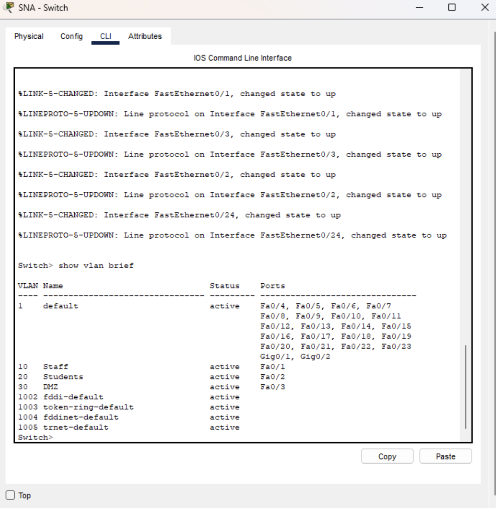
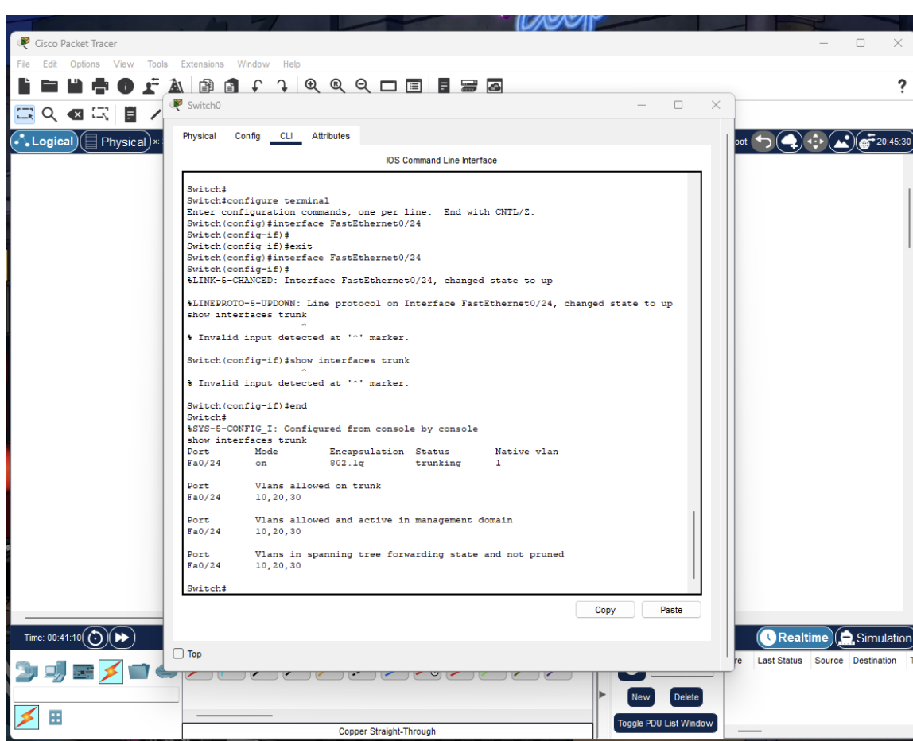
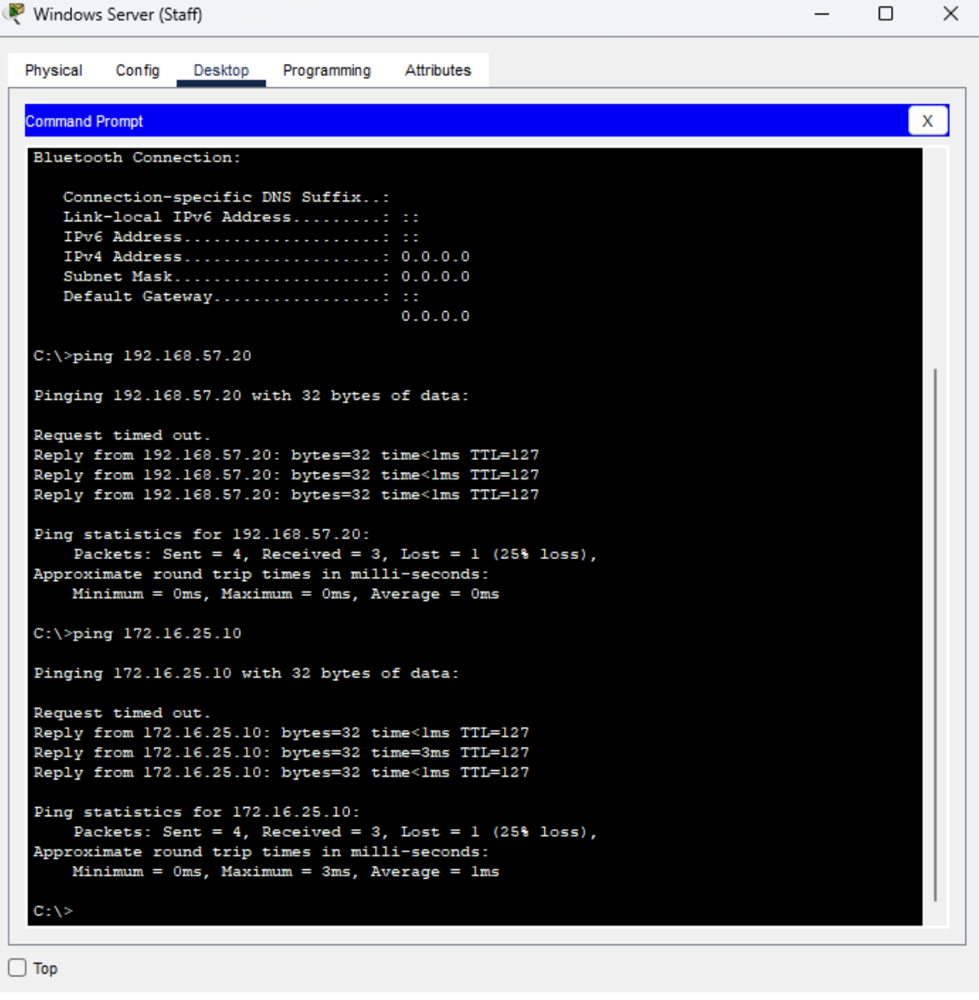

Designed and configured an enterprise-style network using VLAN segmentation, trunking, inter-VLAN routing, ACLs, and NAT in Cisco Packet Tracer.
VLAN Configuration

Trunk Configuration

Connectivity Test

Skills: VLANs, ACLs, Routing, NAT, Cisco Networking